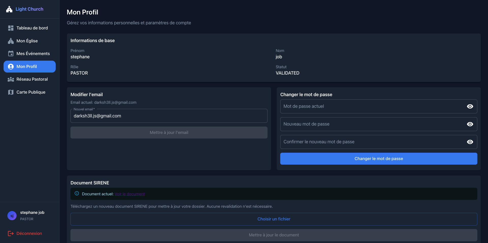
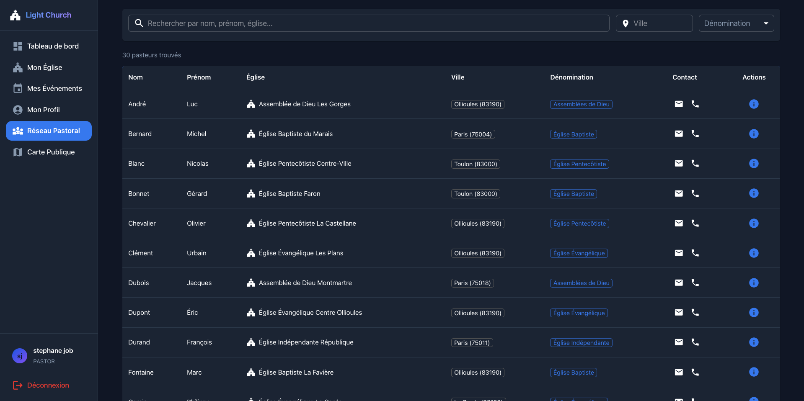
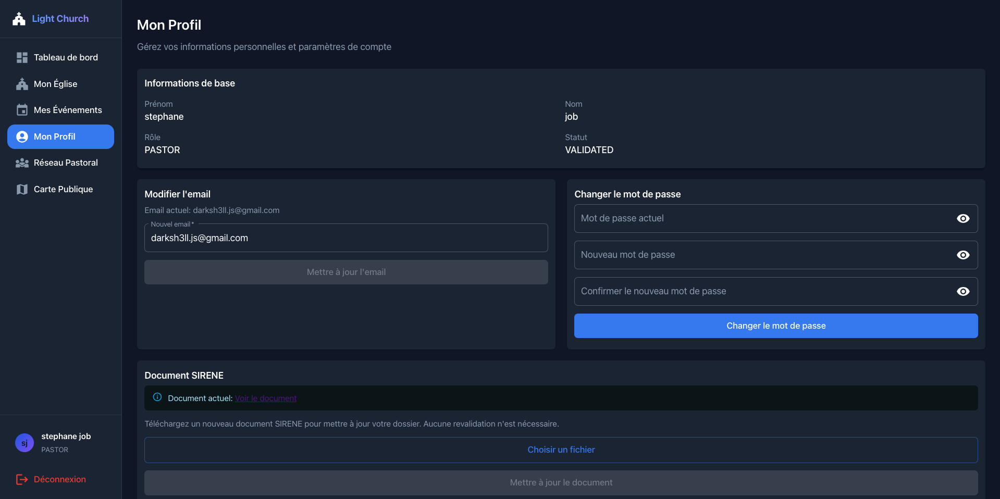
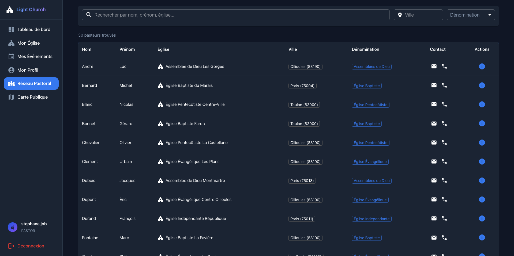

LightChurch
Toutes les églises. Tous les événements.
Une seule plateforme.
Fini l'éparpillement entre Facebook, Google et les sites web. LightChurch centralise tout : églises, horaires, événements. Visible par tous, accessible en un clic.
Vous vous reconnaissez ?
Ces situations, vous les vivez peut-être chaque semaine...
"Nos événements restent vides"
Vous organisez des cultes, des évangélisations, des baptêmes, des soirées de prière pour les malades... mais peu de monde vient. Pourtant, des gens cherchent — ils ne vous trouvent juste pas.
"L'information est éparpillée"
Facebook, site web, Google, affiches, bouche-à-oreille... Vos infos sont dispersées aux quatre vents. Résultat : personne ne sait où chercher, et vous perdez des visiteurs.
"On est isolés des autres"
Vous aimeriez collaborer avec d'autres pasteurs, organiser des événements communs, mais il n'existe aucun outil pour se connecter facilement à l'échelle nationale.
"Infos fausses ou périmées"
Sur Google, les horaires sont faux. Sur les annuaires, l'adresse est obsolète. Vous n'avez aucun contrôle sur ce que les gens trouvent quand ils vous cherchent.
LightChurch : Toute l'Info au Même Endroit
Fini l'éparpillement. Une seule plateforme où toutes les églises et tous les événements de France sont centralisés, visibles et à jour.
Trouvable en 2 secondes
Une personne cherche une église ? Elle vous trouve instantanément avec vos horaires, votre adresse et vos événements — toujours à jour.
Infos mises à jour en temps réel
Vous modifiez vos horaires ou ajoutez un événement ? C'est visible immédiatement. Fini les informations périmées sur Google.
Événements qui se remplissent
Vos cultes, évangélisations, baptêmes sont vus par tous ceux qui cherchent autour de vous. Les inscriptions arrivent en un clic.
Connecté aux autres églises
Rejoignez un réseau pastoral national. Collaborez, organisez des événements communs, partagez vos ressources. L'union fait la force.
Comment ça Marche Concrètement ?
Vous créez un événement
LightChurch le diffuse
Votre audience s'élargit
Pour les Utilisateurs
- ✓ Trouver une église près de chez vous en quelques secondes
- ✓ Voir tous les événements à venir : cultes, baptêmes, conférences...
- ✓ S'inscrire aux événements sans créer de compte
- ✓ Ne jamais manquer un événement grâce aux notifications personnalisées
- ✓ Vie privée totalement respectée, aucune donnée collectée
Pour les Églises et Pasteurs
- ✓ Publiez un événement → il devient visible par tous les utilisateurs à proximité
- ✓ Remplissez vos cultes, baptêmes et conférences grâce à une audience élargie
- ✓ Suivez les inscriptions en temps réel sans gérer de données personnelles
- ✓ Organisez des événements inter-églises pour un impact encore plus grand
- ✓ Connectez-vous au réseau pastoral national pour l'entraide et l'unité
Pourquoi maintenant ?
Le digital est devenu incontournable. Les églises ne peuvent plus se permettre d'être invisibles.
- 10 000+ églises en France dispersées sur le web
- Informations éparpillées entre Google, Facebook, sites perso
- Aucun outil dédié aux pasteurs pour se connecter
- Les jeunes générations cherchent sur mobile
- Aucune plateforme ne les centralise
- Les utilisateurs ne trouvent pas ce qu'ils cherchent
- Besoin d'un réseau pastoral national
- Le digital devient indispensable
Un Réseau National pour Connecter les Églises
LightChurch crée un pont entre les pasteurs, les responsables et les églises de toute la France pour favoriser l'unité, la collaboration et l'action commune.
LightChurch
Église Paris
Église Lyon
Église Marseille
Église Bordeaux
Église Lille
Église Nantes
Communication Directe
Les pasteurs peuvent échanger directement entre eux, partager des informations et coordonner leurs actions à l'échelle locale ou nationale.
Collaboration Inter-Églises
Organisez des événements communs entre plusieurs églises : cultes régionaux, évangélisations, formations, conférences pastorales.
Événements Partagés
Créez des événements visibles par toutes les églises du réseau. Invitez d'autres communautés à participer ou co-organiser.
Actions Communes
Lancez des initiatives nationales : journées de prière, campagnes d'évangélisation, collectes solidaires coordonnées.
Annuaire des Responsables
Accédez à l'annuaire des pasteurs et responsables. Trouvez facilement un contact dans une autre région ou dénomination.
Partage de Ressources
Partagez vos bonnes pratiques, supports de formation, et ressources avec l'ensemble de la communauté pastorale.
Notre Engagement pour Votre Vie Privée
LightChurch place la protection de vos données au coeur de sa conception. Pas de compromis.
Aucune donnée personnelle requise
Utilisez LightChurch sans créer de compte. Explorez les églises et événements en toute liberté, sans fournir email, téléphone ou autres informations personnelles.
Zéro tracking publicitaire
Aucun cookie de tracking, aucune publicité ciblée, aucune revente de données. Votre navigation reste privée et n'est jamais monétisée.
Géolocalisation respectueuse
La géolocalisation est utilisée uniquement pour vous montrer les églises proches. Elle n'est jamais stockée sur nos serveurs ni partagée.
Notifications sur demande
Vous décidez quelles notifications recevoir. Aucune sollicitation non désirée, aucun spam. Vous gardez le contrôle total.
Inscription anonyme aux événements
Participez aux événements sans révéler votre identité. Les organisateurs voient le nombre de participants, pas qui ils sont.
Données chiffrées
Toutes les communications sont chiffrées. Les données des pasteurs et églises sont sécurisées selon les standards les plus stricts.
LightChurch vs. Autres Plateformes
Fonctionnalités de la Plateforme
Carte Interactive des Églises
Les utilisateurs peuvent explorer une carte interactive affichant toutes les églises de France. Filtres par localisation, dénomination, horaires et événements à venir.
Tableau de Bord pour les Pasteurs
Un espace dédié permettant aux pasteurs de gérer leur église, créer et suivre leurs événements, gérer les horaires et accéder au réseau pastoral national.
 



Gestion Centralisée
Interface d'administration complète pour gérer les utilisateurs, valider les églises, superviser les événements et accéder aux statistiques de la plateforme.
LightChurch dans votre Poche
Une expérience fluide et intuitive, conçue pour vous accompagner partout. Disponible sur iOS et Android.


Prêt à être visible ?
LightChurch, c'est plus de visibilité pour vos événements, plus de
participants à vos cultes, et un réseau pastoral pour ne plus être
seuls.
Tout ça, dans le respect total de la vie privée — la vôtre et celle de vos
fidèles.
C'est exactement ce qu'il vous faut.